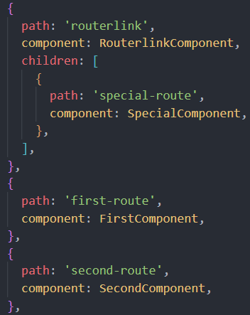
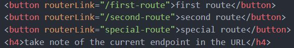

<app-routingnav></app-routingnav>
<div class="container">
  <div class="box">
    <button routerLink="/first-route">first route</button>
    <button routerLink="/second-route">second route</button>
    <button routerLink="special-route">special route</button>
    <h4>take note of the current endpoint in the URL</h4>
  </div>
  <p>app-routing.module.ts</p>
  
  <p>routerlink.component.html</p>
  
</div>
